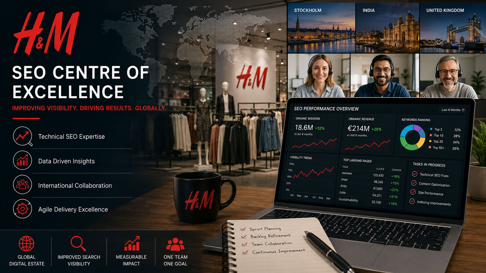

H&M SEO Centre of Excellence
Scrum Master & Agile Coach
I worked remotely as Scrum Master and Agile Coach for H&M's Search Engine Optimisation Centre of Excellence, leading a distributed international team across Sweden, India and the UK. My focus was on improving Agile maturity, strengthening Scrum practices and supporting the delivery of SEO enhancements across H&M's global digital estate.

Project Details
- Client / Organisation
- H&M
- Date
- January 2022 – October 2022
- Role
- Scrum Master & Agile Coach
- Project Focus
- Agile transformation, Scrum coaching, technical SEO delivery, international team leadership and continuous improvement.
- Technical Environment
- Jira, Confluence, Agile Scrum, SEO Analytics, Enterprise E-Commerce Platforms and Global Digital Marketing Systems.
Project Focus
The SEO Centre of Excellence was a specialist cross-functional team responsible for improving H&M's organic search visibility across multiple international markets. The team combined SEO specialists, analysts and technical resources to identify issues affecting search performance, implement enhancements and deliver new capabilities that supported the organisation's global digital strategy.
Working within a fully remote international environment, the team analysed search performance, prioritised improvements and delivered solutions designed to improve search engine visibility, user experience and commercial outcomes. This included supporting technical SEO initiatives, implementing new functionality and responding to insights generated through analytics and performance monitoring.
One example involved identifying a significant reduction in search engine indexing following the introduction of infinite scrolling on product listing pages. Working collaboratively across disciplines, the team helped deliver a solution that maintained the improved user experience while restoring search engine accessibility and visibility.
My Contribution
As Scrum Master and Agile Coach, I was tasked with helping the team adopt a more structured and effective implementation of the Scrum framework. While the team possessed strong technical and SEO expertise, Agile practices were being applied inconsistently, and several opportunities existed to improve planning, estimation and delivery predictability.
Main contributions included:
- Coaching the team in Agile and Scrum principles
- Facilitating Sprint Planning, Reviews and Retrospectives
- Improving the structure and sequencing of Scrum ceremonies
- Refining and grooming the Product Backlog
- Breaking large Epics into smaller, more manageable User Stories
- Supporting Product Owners with prioritisation and backlog management
- Introducing additional refinement sessions during the Sprint cycle
- Improving Story Point estimation techniques across a cross-functional team
- Establishing a shared understanding of estimation baselines
- Analysing team capacity and resource availability on a sprint-by-sprint basis
- Improving Sprint predictability and delivery confidence
- Supporting collaboration between H&M teams across multiple countries
- Removing impediments and enabling more effective delivery
Through these improvements, the team achieved significantly more predictable Sprint outcomes, stronger burndown performance and a much greater understanding of Agile delivery principles.
Technical Environment
The engagement was delivered entirely remotely across an international team distributed between Stockholm, India and the United Kingdom. Agile delivery was managed using Jira and Confluence, with the team working closely with SEO specialists, analysts and technical experts to support H&M's global digital presence.
The role required balancing Agile coaching, stakeholder engagement, delivery management and team development while supporting ongoing improvements across a complex enterprise environment serving multiple international markets.
Project Outcome
The introduction of stronger Scrum practices, improved backlog management and more effective estimation techniques resulted in a noticeably more productive and predictable delivery team. Sprint burndown performance improved significantly, planning became more reliable and the team developed a much deeper understanding of Agile principles and Scrum best practices.
By the conclusion of the engagement, the team was operating with greater confidence, improved delivery consistency and a stronger foundation for ongoing continuous improvement. The experience provided an opportunity to combine Scrum leadership, Agile coaching and international team facilitation within one of the world's largest retail organisations.
X
facebook
linkedin
Instagram
mail